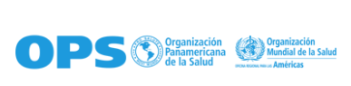
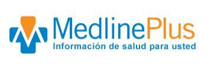
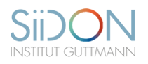
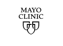

Otras paginas que hablan sobre salud mental y salud fisica

▸ La OPS fue establecida en 1902 y es la organización de salud pública más antigua del mundo. Es la Oficina Regional para las Américas de la Organización Mundial de la Salud y trabaja con los países para mejorar la salud y elevar la calidad de vida de sus habitantes.
▸ La OPS es la organización internacional especializada en salud pública de las Américas. Trabaja cada día con los países de la región para mejorar y proteger la salud de su población. Brinda cooperación técnica en salud a sus países miembros, combate las enfermedades transmisibles y ataca los padecimientos crónicos y sus causas, fortalece los sistemas de salud y da respuesta ante situaciones de emergencia y desastres.

▸ MedlinePlus es un servicio informativo de salud para pacientes, familiares y amigos. Es producido por la Biblioteca Nacional de Medicina de Estados Unidos (NLM, por sus siglas en inglés), la biblioteca médica más grande del mundo y parte de los Institutos Nacionales de la Salud de EE. UU. (NIH, por sus siglas en inglés).
▸ Nuestra misión es presentar información relevante sobre salud y bienestar de alta calidad, confiable, y fácil de entender, tanto en inglés como en español. Buscamos que la información confiable de salud esté disponible en cualquier momento, lugar y de forma gratuita. No hay publicidad en este sitio web y MedlinePlus no endosa ninguna compañía o producto.

▸ MEl SiiDON (Servicio de información integral de la Discapacidad de Origen Neurológico) es una iniciativa del Institut Guttmann que pone a disposición de todas las personas interesadas en acceder a un contenido informativo contrastado y útil en relación al mundo de la discapacidad de origen neurológico, con la intención de ayudar a facilitar la autonomía funcional, el bienestar y la inclusión social de las personas afectadas y sus familiares.
▸ Una iniciativa abierta a la participación y a la contribución del conjunto de la sociedad, especialmente de los colectivos directamente implicados, con el fin de avanzar en contenidos, veracidad, eficacia y actualización de la información contenida.
▸ Top Doctors® es el cuadro médico de referencia de la medicina privada a nivel internacional. Cuenta con los especialistas de mayor reconocimiento en cada especialidad en Europa, LATAM y EEUU.
▸ Surge con el objetivo de dar respuesta a una clara necesidad: saber quién es el mejor especialista al que acudir cuando nos enfrentamos a un problema de salud.

▸ Mayo Clinic realiza esfuerzos constantes para mejorar la salud y el bienestar de las minorías. A través de programas de educación y concientización, atención médica personalizada e investigación innovadora, Mayo Clinic se esfuerza por eliminar las disparidades de salud dentro de nuestras comunidades y por ayudar a prevenir y reducir las enfermedades y muertes prematuras en las poblaciones minoritarias. Mayo Clinic también alienta y fomenta la diversidad y la inclusión.